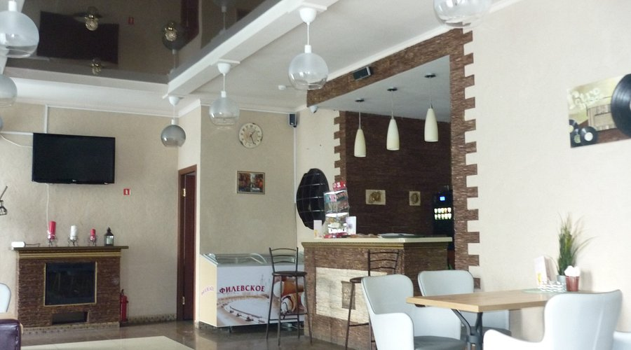

Пиццы
Пиццы 30 см, готовим под заказ из свежих ингридиентов
Кафе «Любимое» находится в Кунгуре на Октябрьской улице. Здесь можно посмотреть адрес, открыть карточку заведения и позвонить перед визитом.
«Любимое» — кафе по адресу Октябрьская улица, 21А. На странице собраны контакты и маршрут.
Позвоните в кафе, чтобы узнать подробности визита.
Откройте карточку кафе на Restaurant Guru.
Адрес и телефон кафе — рядом. Постройте маршрут или откройте карточку заведения.
Открыть карточку ↗